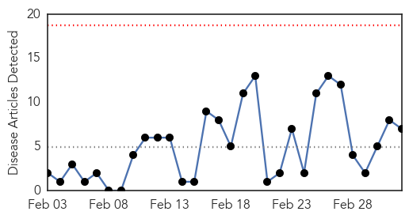
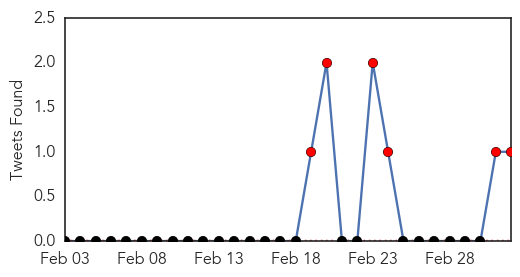
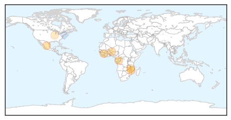
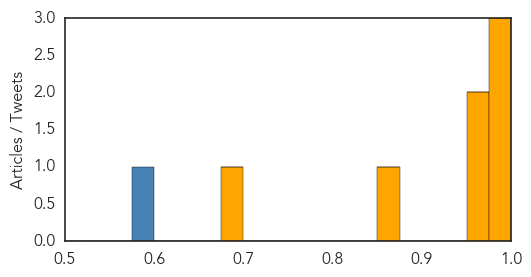

Cholera
30-Day Web Trend
0 alerts, 0 warnings

30-Day Twitter Trend
6 alerts, 0 warnings

Article Locations
Article Confidences
Top Articles:
- 0.996
- WHO intensify support to prevent cholera in Malawi floods camps
- 0.995
- European Commission
- 0.983
- Epidemiological Update Cholera, 3 March 2015 - Haiti
- 0.975
- DR Congo cholera cases top 1,500, 35 dead
- 0.972
- DR Congo cholera cases top 1,500, 35 dead: UN
- 0.851
- Flooding leaves thousands homeless in Southern Africa
- 0.692
- Avian Cholera Outbreak Earlier This Winter Claimed 300 Birds; Not a Threat to Overall Waterfowl Populations
Top Tweets:
- 0.577
- RT: 35 people killed & more than 1000 infected by a cholera outbreak in DRC's Katanga province in the past two months says.
Yellow Fever
30-Day Web Trend
3 alerts, 0 warnings

30-Day Twitter Trend
0 alerts, 0 warnings

Article Locations

Article Confidences

Top Articles:
-
No articles found for Mar 04, 2015
Top Tweets:
-
No tweets found for Mar 04, 2015